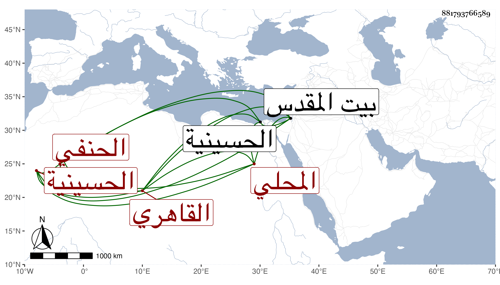

0902Sakhawi.DawLamic.ITO20230111-ara1.EIS1600.881793766589
Biography ID: 881793766589
296
محمد بن محمد بن عبد اللطيف بن أحمد البدر أبو الفضل بن الشمس المحلي الأصل القاهري الحنفي الماضي أبوه سبط الشهاب الحسيني فأمه ابنته وأمها ابنة الشمس البوصيري وهو بكنيته أشهر. ولد في ثالث عشرى شوال سنة ثلاث وثلاثين وثمانمائة بالحسينية ثم تحول مع أبويه إلى الشرابشية بالقرب من جامع الأقمر فسكنها وحفظ القرآن والعمدة والنخبة لشيخنا والكنز والفية ابن ملك ، وعرض في سنة أربع وأربعين فما بعدها على خلق كسعد الدين بن الديري والأمين الأقصرائي والزين عبادة والعلاء القلقشندي في آخرين ممن أجاز ولازم ثانيهما أتم ملازمة في الفقه والأصلين والتفسير والعربية وغيرها وكذا لازم الزين قاسما في كثير وفي الفقه وأصوله وغيرهما ابن عبيد الله وسيف الدين وعنه أخذ في التفسير أيضا وفي الفقه خاصة ابن الديري والعضدي الصيرامي والعز عبد السلام البغدادي وفي العربية الشمنى وأحمد الخواص وفي أصول الدين الشرواني والعلاء الحصني وعنه أخذ في المنطق وعن السيد الحنفي شيخ الجوهرية وأبي الجود الفرائض وسمع جملة من دروس ابن الهمام وابن قديد ولازم التقي الحصني في أصول الدين والمنطق والمعاني والبيان والنحو والصرف وجود في القرآن على الزين جعفر وتلقن من الشيخ مدين وأذن له في إقراء كتب الأصول والفروع الأقصرائي وشهد له بعلمه بكمال استعداده وتوقد فطنته وسلامة سليقته وجودة فضيلته وكان قد اختص به ولازم خدمته ومرافقته ... له بحيث عرف به ومما قرأه عليه البخاري وسمع على شيخنا المحدث الفاصل للرامهرمزي والمحامليات وعلي الشمس البالسي غالب الترمذي وكذا علي الجلال بن الملقن في آخرين ، وحج غير مرة وجاور مرتين إحداهما سنة والأخرى أشهرا وسمع هناك علي التقي بن فهد وأخذ عن أبي البقاء بن الضياء ، وزار بيت المقدس والخليل وأخذ فيه عن البرهان الأنصاري وباشر ديوان الأمير أزبك الظاهري فنمى وكثرت جهاته وركب الخيول النفيسة وتضاخم جدا ثم تحرك له الأمير وأخذ منه جملة ولولا الأمين لزاد ومن ثم لزم الانجماع عنه وعن غيره إلا نادرا مع إجراء الأمير عليه جامكيته فيما قاله لي بل أضاف إليه فيما بلغني خزن الكتب التي حبسها بالجامع الأزبكي وقنع بما تأخر مع إظهاره التقشف ومشيه أو ركوبه الحمار وإقباله على أسباب الطاعات من حج وزيارة ومباشرة لجهاته كالطلب بالصرغتمشية ونحوه وربما توجه لتغرى بردى القادري لإقرائه بل أقرأ غيره من الطلبة ومسه من يشبك من مهدي الدوادار الكبير بسبب معارضته المغربي القلجاني القائم في إعادة الكنيسة بعض المكروه وغضب شيخه الأقصراني وكان في المجلس وقام فلم يلتفت له وقد كثر اجتماعه بي واستجازني وسأل في قراءة شيء وأخبرني بأنه كتب على خطبة المنار لابن فرشتا شرحا وكذا شرح غاية تهذيب الكلام في تحرير المنطق والكلام التي عملها التفتازاني لولده ، وهو جامد يابس وفي نفسه بقرائن الأحوال أشياء وعلى كل حال فهو أحسن حالا من أيام الأمير . وقد تعلل مدة ثم مات في صفر سنة ست وتسعين رحمه الله وإيانا .
